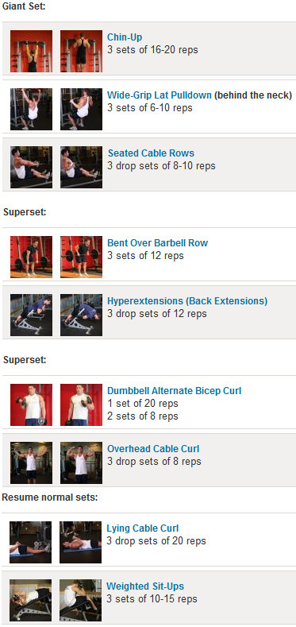

Today's Workout RoutineBack and Biceps  |
About UsWe are a Co-Curricular Activity(CCA) group from Singapore Institute of Management(SIM). Our main goal is to instill fitness to other students while maintaining our own fitness level. We have members who are in shifts in the gym and they will give you any assistance or guidance you need. Feel free to join us as well! Click here! |
Latest NewsNew research from scientists at McMaster University reveals exercise-related testosterone and growth hormone do not play an influential role in building muscle after weightlifting, despite conventional wisdom suggesting otherwise. Read More >>An evaluation of national data by UC Davis researchers has found that extra weight is not necessarily linked with a higher risk of death. Read More >>A*STAR scientists from the Institute of Molecular and Cell Biology (IMCB) and the Singapore Bioimaging Consortium (SBIC) have discovered a new signalling pathway that controls both obesity and atherosclerosis. The team demonstrated, for the first time, that mice deficient in the Wip1 gene were resistant to weight gain and atherosclerosis via regulation of the Ataxia telangiectasia mutated gene (ATM) and its downstream signalling molecule mTor. These groundbreaking findings were published in the journal Cell Metabolism on 3rd July and may provide significant new avenues for therapeutic interventions for obesity and atherosclerosis. Read More >> |
Workout Tips-of-the-day
|